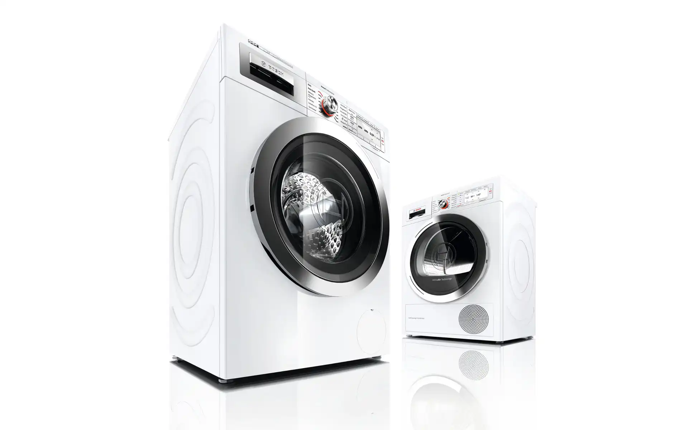
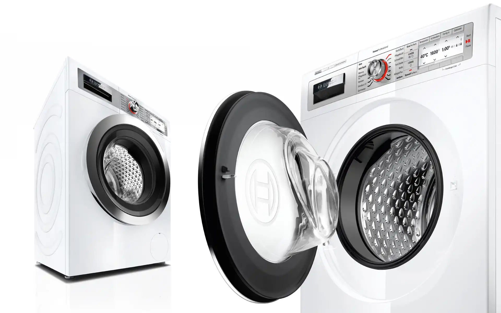
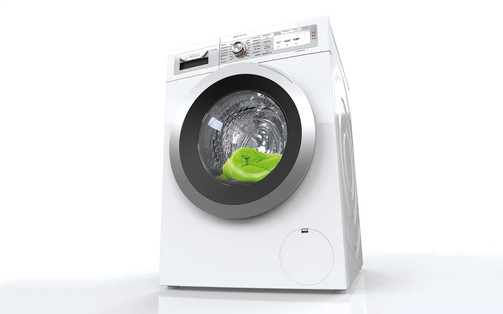
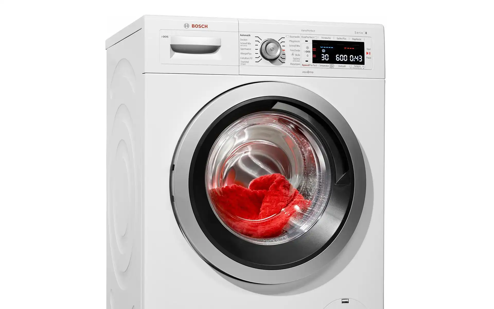

Bosch WAY287W3 Home Professional
Washing Machines
Bosch WAY287W3 Home Professional
Waschmaschinen
The Bosch washing machines are aimed at the very discerning customers.
All technical highlights are packed into one design, accommodating this degree of innovation. Symmetrical
proportions, high-quality materials and clever details give this product a unique identity.
Selić Industriedesign service: CAD design support, CAD freeform modeling and design refinement,
processing of design data for the engineering department
Die Bosch-Waschmaschinen wenden sich an Kunden mit höchsten Ansprüchen.
Die technischen Highlights sind verpackt in einem Design, das dem Innovationsgrad Rechnung trägt. Der
Designaufbau im CAD verleiht dem Produkt die erwünschte gestalterische Präzision. Symmetrische
Proportionen, hochwertige Materialien und durchdachte Details verleihen dem Produkt eine einzigartige
Identität.
Selić Industriedesign Dienstleistung: CAD-Design Unterstützung, CAD-Freiform-Modellierung und
Detailgestaltung, Aufbereitung von Designdaten für die Konstruktion




Images © BSH GmbH